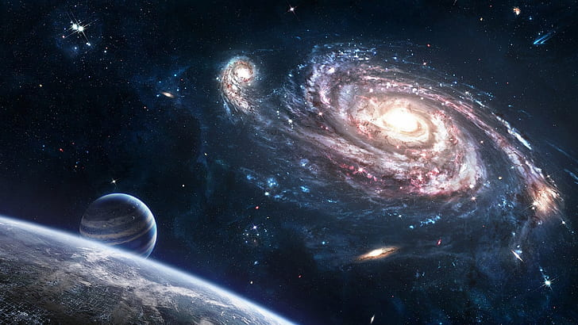

En alguna región del mundo se reflexiono sobre las luces del cielo las cuales conocemos como estrellas, en aquellos días alejados de nuestra era observaron una estela de luz y sombras en la noche a la cual le llamaban el espinazo de la noche. Se creía que sin éste el cielo podría caerse a pedazos sobre los seres vivos del planeta.
Carl Sagan protagonista de la serie Cosmos nos relata uno de los temas mas asombrosos de su ámbito comenzando con una reflexión sobre lo que pensaba que eran las estrellas. Resulta que son soles, pero alejados a millones de años luz, recita una especie de poema que denomina reflexión sobre éstas y nos comparte que veía a las estrellas como fogatas de seres divinos y poderosos los cuales observaban a la humanidad. Cuando caía la noche éstos encendían la fogata e iluminaban el cielo.
Mucho tiempo después si no me equivoco 400 años A.C. en una región del planeta llamado Jonia
una región ahora llamada Anatolia que se ubica en la antigua Grecia. Existía una sociedad de
personas que aislados de los grandes imperios que imponían autoridad y rechazaban nuevos
pensamientos por su naturaleza, se promovía el pensamiento libre y las ideas entre los
individuos.
Esto dio paso al desarrollo de ideas sobre el universo y el cosmos, que la tierra giraba alrededor del sol y no al revés. Con el pasar del tiempo surgieron grandes pensadores de esa época como Platón y Pitágoras que comenzaron a comprender el mundo de una perspectiva matemática y daban lógica y razón a las ideas que en un principio se implementaron rechazando y oprimiendo a esas ideas para ser olvidadas.
Es en este lugar y época donde nació la ciencia por su variedad de pensamientos y refutaciones sobre los que es real y no, la materia, el cosmos, los planetas, las estrellas y todo aquello que esta fuera de nuestro alcance humano.
En el final nos explica algunos experimentos de como es que se buscan planetas alrededor de los soles que se puedan observar, demostrándonos como es que la evolución y desarrollo del ser humano es gracias a las ciencias que hoy en día nos ayudan a comprender las cosas que son complicadas de asimilar a la primera.
Cosmos - El Espinazo de la Noche
 Yotube - COSMOS Episodio 7: El Espinazo de la noche (Español)Análisis
Todos somos ignorantes y no es algo malo porque siempre hay cosas por aprender y conocer. La curiosidad e interrogantes son motores de motivación para sumergirse en todo aquello que para cada individuo es importante. La parte mas importante o que llama mi atención es la historia de Jonia, cómo en un lugar aislado de los imperios que imponen la autoridad fue posible ese intercambio y aportación de ideas entre las personas que lo habitan. Promoviendo el desarrollo de la tecnología y la ciencia en pro de la comunidad. Sin estos acontecimientos nuestra diversidad de ciencias pudiera estar apenas en un estado mas retrasado de lo que estamos ahora y no podríamos pensar en descubrir nuevos mundos en otro lugar esta galaxia en la que estamos ubicados. Somos afortunados de vivir en esta era de descubrimientos y nuevas invenciones.